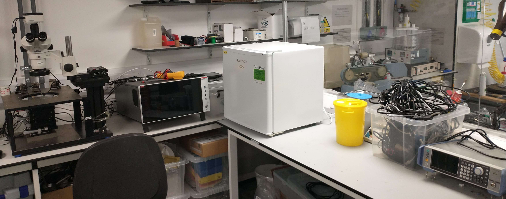

Why Join a PhD in REST?
Researching RF-Enabled Sustainable Technologies (REST) at UofGlasgow, you will be part of a small and starting yet well-supported team working at the fore-front of electronic engineering with "world-firsts" being a regular aspect of the job.
The requirements are (1) interest in RF electronics, with some knowledge; (2) a related 1st Class degree (including EEE, MechE, CS, and Physics); and (3) drive and passion to do novel engineering and communicate it to the world.
In addition to the regular benefits of a PhD from a top-100 worldwide University, here are some aspects unique to a PhD in REST working with me. 
Unthought benefits of a PhD in REST:
Internships and Time in Industry:
You will be supported to "take time off" your core PhD research to complete a secondment (by applying for paid internships) in industry*. The RF industry has a significant shortage and your background at REST will be sought after. Such roles will enhance your CV, employability, and even your PhD research.Part-time Paid Research/Teaching Opportunuties:
Primarily considered a supplementary income by PhD students, part-time opporunuties* can align with research and lead to authoring/co-authoring publications, or making create with future employers.Support with External (Supplemental) Scholarships and Grants:
There are many sources for additional research funding for capable students, e.g. from the IEEE and the IET; they often go unnoticed! At REST, you will hear about these and get tailored support in applying.
For example, the first-place winner of a Design Competition at the IEEE International Microwave Symposium wins over $1,000 in cash.Travel to Major Conferences:
You will be given opportunuties to present your research at large international events in Europe and beyond, giving you valuable networking (and travel) opportunuties.Funds for Professional Development and Training:
All PhD students are allocated a grant specifically for accessing training courses and attending relevant events.Personalized Training, Mentoring, and Guidance:
From technical writing to videography and slide preparation you will get day-to-day coaching that travels further than your 3-4 years of research.Work-Life Balance, Student Activities and Sports:
Being a student of UofGlasgow, you get exclusive access to 100s of sports groups, societies, and activities (some of which have postgrad-specific events), see GCU for furher details.
Prospective Career Benefits of REST PhD Research:
Watch Prof. Bashir Al-Hashimi CBE of KCL explain how "all the exciting things were done by those with PhDs"Entrepreneurship and Start-Ups:
A PhD is a unique opportunity to spend 3-4 years working on a technical challenge through to exploring commercial opportunuties. As a UofG student, you can get support from Student Enterprise.
No other job gives you time and support to progress novel ideas into products/impact (and money)!Improved Prospect with Joining Industry Research Labs:
A quick LinkedIn search will show you that the majority of engineers in (exciting) techincal research and development roles have a PhD.
RF R&D roles are regularly advertised at Google, Meta, Apple, Amazon 126, European Space Agency, and others.Rapid Career Progression in Industry:
With the majority of graduates spending 1.5-3 years in a graduate scheme, an industry-aligned PhD topic could propel you to more senior engineering roles (which typically require 4+ years of experience).Academic Research:
The PhD graduate stereotype! While it's certainly not the only route a PhD graduate can excel in, it's one that usually requires a PhD to be able to get a taste of. You might like it in academic research after 3 years in a PhD!Peer-Reviewed Feedback and Authority:
Although the process of publishing can intimidate some students, the opportunity to get (free) technical feedback and reviews from world-renowned experts is a unique benefit of peer-reviewed publications. Publications on your CV often "unlock" better jobs and give you additional technical authority.